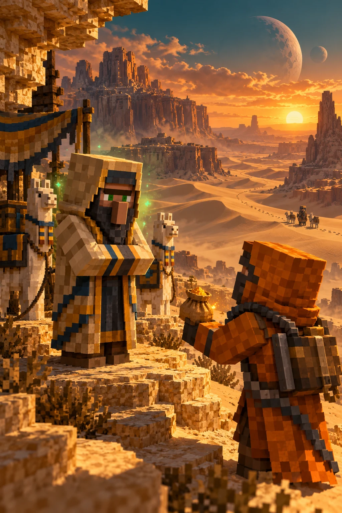

SPICE SMUGGLING
The Unmarked Spice Run
Carry 64 tagged spice to a different smuggler, at least 64 horizontal blocks from your departure point.
- Default gross reward
- 1,392 Solaris
- Contract window
- 30 real minutes